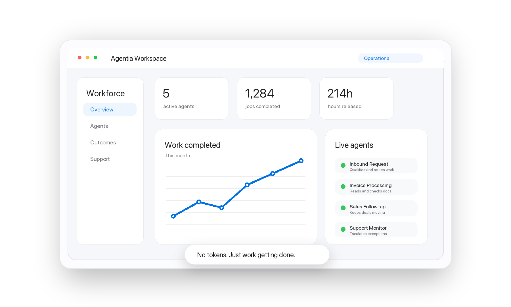

01
Separate job from executor
An agent completes a business job with a measurable result.
Agentia Labs helps founder-led companies turn operational work into managed AI capacity.
The unit is the job.

An agent completes a business job with a measurable result.
Each job gets one metric and one review rhythm.
The best opportunities often sit outside today's capacity.
We choose the first job by value and friction.
Support, qualification, knowledge access and guided service flows.
Documents, enrichment, integrations, follow-up, routing and back-office workflows.
Core flows become comparable maps.
Prioritised jobs become working agents.
Each job is measured every month.
 Anthropic
Anthropic
 OpenAI
OpenAI
 Google
Google
 Meta
Meta